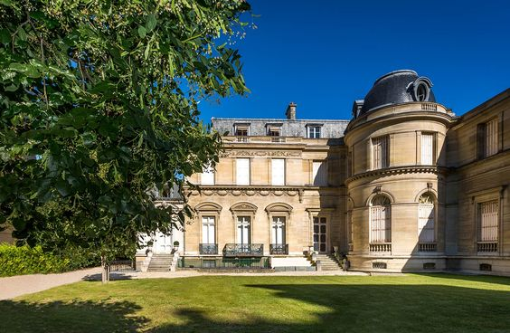

Armando Fuentes Silva - A01712074 -
The magnificent townhouse with its perfectly preserved Empire-style decor was once owned by Paul Marmottan and is now home to the Musée Marmottan Monet. In addition to its collection of pre-modern paintings, sculptures and illuminations, it boasts the world’s leading collections of works by Claude Monet and Berthe Morisot. This outstanding Impressionist treasure is further enriched by works from Delacroix, Boudin, Manet, Degas, Caillebotte, Sisley, Pissarro, Gauguin and Rodin, with Chagall representing the modernist period.
The Museum houses the world’s biggest collection of works by Monet. Alongside the iconic Impression, Sunrise, some hundred masterpieces bequeathed by the painter’s family and close friends offer an unmatched panorama of the art of the leading Impressionist, from landscapes in Argenteuil to Rouen Cathedral and on to a unique ensemble of Water Lilies and views of the garden in Giverny. Come and let Monet’s secret garden work its charm!
Dashingly executed in pastel tones, bucolic scenes, rural landscapes and portraits of “young girls in flower” illustrate the talent of Berthe Morisot, the first woman Impressionist. This ensemble bequeathed by her descendants constitutes the biggest public collection of this artist’s work, unmatched anywhere in the world. It comprises more than 25 oil paintings as well as rare watercolours and pastels. A remarkable collection and a real must for visitors.
Experience a unique event by organising unforgettable dinners, cocktails or breakfasts in the Salle Claude Monet or Salons Marmottan, where your guests can savour our permanent collections and temporary exhibitions in an exclusive setting.